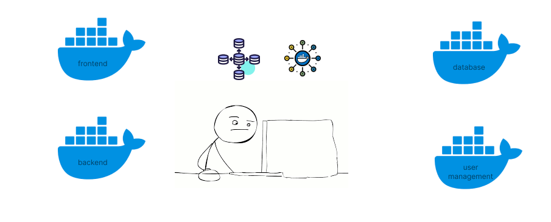

Hello people! Good to see you here. Today we would be learning about docker compose, what is it, why we need it, and its examples. Let’s begin.
Agenda
- Current Scenario
- What is docker-compose?
- How does docker compose change the current scenario?
- Defining Services
- Volume and Bind mounts
- Networking
- Environment Variables
- Conclusion
Current Scenario
A single application comprises containers for different services responsible for their respective tasks. For example, a backend service, a database service to manage data, a frontend for the app, and so on. All of these services need to be in the same network to communicate with each other. I have explained docker networking in my post Docker Networking.
Managing all these services and different constituents such as networking, volumes, bind mounts, etc becomes an arduous task.

The following points summarise the problems in the current scenario:
- Networking. We have to explicitly create and manage networks. We have to be sure that a particular container is connected to a particular network.
- Volumes and bind mounts. There is no centralized way to know what all volumes are connected to all services of an application.
- Container lifecycle. If any container stops, it becomes our responsibility to restart the container.
These are some of the major problems. Setting up a multi-container application comprises multiple commands. For example,
# for running database container
docker run -d --name database --network bitphile images/mysql
# for running frontend
docker run -d --name frontend -p 3001:3001 --network bitphile bitphile/frontend
# for running backend
docker run -d --name backend --network bitphile -mount type=volume,source=bitphile,target=/vol bitphile/backendThis is just for a small multi-container application comprising three services. Think about if the application is composing several services.
Docker Compose
Docker compose is a tool that helps in defining and running multi-container applications. It enables us to define each container as a service, its interactions with other services, and some other configurations.
How does it help to tackle the current Scenario?
Let’s see each of the points mentioned in the problem statement and scrutinize how docker compose helps in there.
Networking
Services defined inside a docker compose for a particular application are by default in a network for that project. When the docker compose is up, all those services are in a project namespace network.
So, there is no need to worry if the frontend sends a request to the backend. Moreover, the networking properties still apply here. A container can be referenced with its name for sending a request instead of its IP address.
We will this into action shortly in a subsequent section.
Volumes and bind mounts
We can define volumes and bind mounts for services inside the docker compose definition file. We can specify to delete the volumes when doing compose down.
Containers Life Cycle
Docker compose acts like an orchestrator which manages the life cycle of containers. Though it is not much effective for small applications it suffices. It provides ways to specify restart the container if it dies.
It becomes very easy to create, run and stop services by using docker compose.
Whole application picture in a single place
Using docker compose, the application becomes fathomable. By seeing the docker compose file itself we can identify what is happening. What all services are there, what is the networking structure, what volumes are in use, etc.
Well, it is all about theory. Let’s see docker compose in action.
Defining services
We are required to create a docker compose file named docker-compose.yml (you can give any other name but have to specify explicitly in the command, we will see shortly).
A minimal docker compose file looks like following
version: '3.7'
name: bitphile
services:
todo-backend:
container_name: todo-backend
image: bitphile/todo-backend
Explanation
versiondefines the version of Compose file. It is required to identify the schema used for the docker compose file.nameis the name of the project. If it is omitted, the project directory name is assigned toname.servicesdefines what all containers the compose comprises. Each item is the name of the service.
Building image
There are two ways we can define service.
- Specifying how docker can build an image by giving
buildproperty. - Directly giving the
image.
version: '3.7'
name: bitphile
services:
todo-backend:
container_name: todo-backend
build:
dockerfile: Dockerfile
context: .
This builds the image and spins up the container.
Directly using image
version: '3.7'
name: bitphile
services:
todo-backend:
container_name: todo-backend
image: node-alpineThis will lead to pulling off the image and then spinning up the container.
Volume and Bind mounts
It is fairly simple to mount a volume in docker compose. There are following ways a docker volume can be mounted.
Let docker create volume for you
version: '3.7'
name: bitphile
services:
todo-backend:
container_name: todo-backend
image: bitphile/todo-backend
volumes:
- /app/volume
Now, if we spin up the compose
⟩ docker compose up -dand listing down the volumes, we get
⟩ docker volume ls
DRIVER VOLUME NAME
local a98a19a6d84da93031cb6a331993d2a49bfde5689594a413caddefe4a84d4aefSo, docker itself created a volume for you.
Named Volume
We can name our volume by explicitly specifying volumes section in compose file.
version: '3.7'
name: bitphile
services:
todo-backend:
container_name: todo-backend
image: bitphile/todo-backend
volumes:
- bitphile:/app/volume
volumes:
bitphile:
driver: localvolumes can have more properties. You can check those out on the official docs of docker (I have mentioned them in the references section).
Bind a host path
We can bind a host path as follows
version: '3.7'
name: bitphile
services:
todo-backend:
container_name: todo-backend
image: bitphile/todo-backend
volumes:
- ./host/path:/app/host
Note: The structure of the volumes item is,
[source:]target[:mode]where mode can bero(read only) andrw(read and write).
Networking
Docker compose by default creates a default network where all the defined services reside. However, we can explicitly create a network and define the services.
version: '3.7'
name: bitphile
services:
todo-backend:
container_name: todo-backend
image: bitphile/todo-backend
network:
- bitphile
networks:
bitphile:
driver: bridgeWe don’t need to mention driver properties. Docker uses it as default. Just to mention that we can specify more properties, I have specified this property.
Environment Variables
You must be already aware of environment variables and their use cases. We can use environment variables in docker compose in the following ways.
Passing to services
- Using
environment - Using
env_file
Environment variables
version: '3.7'
name: bitphile
services:
todo-backend:
container_name: todo-backend
image: bitphile/todo-backend
environment:
- NODE_ENV=productionEnvironment file
version: '3.7'
name: bitphile
services:
todo-backend:
container_name: todo-backend
image: bitphile/todo-backend
env_file:
- .env-filePopulating Environment variables in compose file
- Passing environment file through docker compose command
- Using
.envfile
Passing through CLI
Docker provides --env-file flag to specify the environment file to use.
⟩ docker compose --env-file .env-file upUsing .env
We don’t need to specify this file. Docker takes it by default.
Conclusion
So, docker compose is a powerful tool helping in creating and managing multi containers applications. It provides several features and options which can’t be covered in this post. If you are interested in deep diving into those features, I would recommend you to go through the official docs. For simple uses, I don’t think you would have to rummage through all those options.
So, this is it for now. We have reached our junction and our train has to take a halt. Let’s continue our journey on the next green light with some other interesting topic.
Please provide your valuable feedback about what you liked, what has to improve, and what topic should be there for our next junction.
Until then,